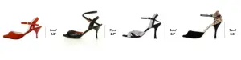
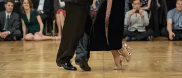
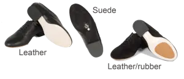

Waarom zijn goede tangoschoenen belangrijk?
Dansen op straatschoenen staat je techniek in de weg. Goede tangoschoenen zijn essentieel voor je as, balans en knieën. Sinds 2007 zie ik hier bij BE-TANGO beginners worstelen op stroeve rubberen zolen, wat hun pivot blokkeert en nefast is voor de gewrichten. Voor absolute beginners zijn tangoschoenen nog niet noodzakelijk — comfortabele schoenen met een gladde zool volstaan prima voor de eerste lessen.
Een authentieke tangoschoen is specifiek ontworpen voor de abrazo en het constante balansspel. Trek een goed paar aan en je voelt het verschil meteen. Investeer in degelijke schoenen vóór je in iets anders investeert.
Tip 1 — Gewicht en ondersteuning
Je tangoschoen moet veel lichter zijn dan je alledaagse schoenen. De reden: het voetenwerk in de Argentijnse tango is verfijnd en subtiel. Zware schoenen vertragen je. De zool is cruciaal: kies altijd voor leer of suède. Vermijd rubber, want dat kleeft aan de vloer en belast je knieën tijdens het draaien.
Met een gladde zool en een lichte schoen zweef je over het parket. Of je nu in de BE-TANGO studio staat of op een zomerse milonga in het Warandepark danst, je houdt het uren vol zonder kramp. Je voeten zullen je dankbaar zijn.
Tip 2 — Balans en hakhoogte
De juiste hak verplaatst je gewicht automatisch naar de bal van je voet, exact waar je zwaartepunt moet zitten voor een zuivere pivot. Volgers kiezen idealiter een hakhoogte van 5 tot 7 cm. Dat geeft je de elegante, voorwaartse tangohouding. Voor leiders is 1,5 tot 2 cm de norm. Die subtiele verhoging stabiliseert je basis tijdens het leiden.
Begin je net met lessen? Vermijd naaldhakken van 9 centimeter. Dergelijke beginnersfouten zie ik vaak op de dansvloer. Je enkels knikken om omdat de spierkracht ontbreekt. Bouw de hakhoogte geleidelijk op over enkele maanden. Gun je voeten en pezen minstens een half jaar om te wennen. Tango is een marathon, geen sprint.


Tip 3 — Zoolmaterialen en dansvloer
Stem je zool af op de dansvloer. Het perfect onderhouden parket hier bij BE-TANGO vereist een andere aanpak dan de stroeve tegels van een historisch Brussels zaaltje. Je hebt twee opties: leer of suède. Leer is spiegelglad en ideaal voor snelle draaien, maar suède is mijn persoonlijke voorkeur voor de meeste dansers.
Suède is veelzijdig. Het biedt grip bij het stilstaan en glijdt tijdens het draaien. Een bekende truc in de tangowereld: bewaar een stalen suèdeborsteltje in je schoenentas. Te gladde vloer? Ruw de zolen op. Te stroeve vloer? Wrijf er wat talkpoeder over en je pivots verlopen weer vlot.

Tip 4 & 5 — Pasvorm en aankooptips
De pasvorm is cruciaal. Een nieuwe tangoschoen mag best wat strak zitten. Je voet mag geen millimeter verschuiven. Zodra je hiel loskomt, verlies je de connectie met de vloer. Onthoud de gouden schoenmakersregel: leer rekt uit in de breedte, maar nooit in de lengte. Raakt je teen de voorkant? Dan is de schoen te klein. Probeer verschillende merken, want een Italiaanse leest verschilt van een Argentijnse.
Volgers, kies een soepele voorkant zodat je je voet mooi kunt strekken (el empeine). Leiders, vermijd modieuze schoenen met lange, spitse punten. Daarmee trap je gegarandeerd op de voeten van je partner tijdens een drukke milonga.
Een goed paar kost tussen de €120 en €180. Dat lijkt veel, maar bekijk het in verhouding tot de duizenden uren dansplezier. Je investeert niet in leer, maar in techniek, balans en jarenlang dansen zonder blessures.
De beste tangoschoenmerken voor beginners en gevorderde dansers
De juiste merkkeuze kan een aanzienlijke invloed hebben op je tango-ervaring. Hier is een overzicht van enkele populaire opties, afgestemd op verschillende niveaus en budgetten. Onthoud dat de pasvorm cruciaal is, dus probeer ze indien mogelijk!
Comme il Faut (Argentinië): De onbetwiste koningin van de tangoschoenen, met prijzen die doorgaans variëren van €150 tot €200. De ontwerpen zijn verbluffend en bevatten vaak unieke stoffen en versieringen. De pasvorm is over het algemeen zeer comfortabel en ze staan bekend om hun uitzonderlijke vakmanschap.
Madame Pivot (Europa): Een fantastische middenklasse optie, die meestal tussen de €140 en €180 kost. Madame Pivot biedt een breed scala aan stijlen, hakhoogtes en kleuren. Ze zijn over het algemeen goed gemaakt en comfortabel, waardoor ze een populaire keuze zijn voor zowel beginners als ervaren dansers. Ze zijn een geweldige balans tussen kwaliteit en prijs.
Tangolera (Italië): Nog een uitstekend Italiaans merk, vergelijkbaar in prijsklasse met Madame Pivot. Tangolera staat bekend om zijn stabiliteit en goed uitgebalanceerde ontwerpen. Ze bieden een goede selectie van stijlen, van klassiek tot moderner. Veel dansers vinden ze bijzonder comfortabel voor lange milonga's.
Mr. Tango Shoes: Een merk dat bekend staat om zijn stevige constructie en focus op comfort, vooral voor leiders. De prijzen liggen over het algemeen tussen de € 150 en € 250. Ze bieden een goede selectie van klassieke stijlen en zijn een betrouwbare keuze als je duurzaamheid belangrijk vindt. Ze zijn een geweldige optie voor diegenen die op zoek zijn naar een meer traditionele, robuuste tangoschoen.
Nueva Epoca: Nog een hoog aangeschreven merk, vaak te zien op internationale tangofestivals internationale milonga's en tango evenementen. Ze bieden een goed aanbod aan stijlen en de kwaliteit is over het algemeen zeer goed. De prijzen variëren afhankelijk van het model, maar liggen doorgaans tussen de €150 en €200.
Waar tangoschoenen kopen in Brussel en België
Het vinden van de perfecte tangoschoenen in Brussel en België vereist wat zoekwerk, maar het is zeker mogelijk!
Helaas zijn er in Brussel zelf maar weinig speciale tangoschoenwinkels. Sommige winkels voor danskleding hebben echter mogelijk een beperkte selectie. Het is altijd het beste om vooraf te bellen om hun voorraad te controleren.
De Tango Se Trata (www.detangosetrata.com) in Molenbeek is een gespecialiseerde winkel voor tangoschoenen en -kleding — ze hebben onder andere Madame Pivot en Monsieur Pivot. Bel zeker vooraf met Sandrina, de eigenares, om een afspraak te maken.
Online retailers: Verschillende online retailers zijn gespecialiseerd in tangoschoenen en verzenden naar België. Zoek naar gerenommeerde sites met een goed retourbeleid, omdat de maatvoering lastig kan zijn. Besteed aandacht aan de maattabellen en lees recensies van andere klanten. Als je niet zeker bent van de maatvoering, overweeg dan om een paar maten te bestellen en de maten die niet passen terug te sturen. Regina Tango Shoes (reginatangoshoes.com) uit Italië is een betrouwbare optie.
Schoenkraampjes op festivals: Tangofestivals zijn een fantastische gelegenheid om een breed scala aan tangoschoenen te passen en te kopen. Verkopers wonen vaak grote tango-evenementen bij, zoals het Brussels Tango Festival (indien gehouden) en andere festivals in heel Europa. Hierdoor kun je de schoenen persoonlijk zien en voelen en deskundig advies krijgen van de verkopers. Kijk of er festivals in de buurt van Brussel aankomen internationale milonga's en tango evenementen.
Maatadvies: De maatvoering van tangoschoenen kan sterk variëren tussen merken. Het wordt over het algemeen aanbevolen om een halve maat of zelfs een hele maat groter te nemen dan je normale schoenmaat. Meet bij het online bestellen je voet zorgvuldig op en vergelijk deze met de maattabel van het merk. Vergeet niet om beide voeten te meten, aangezien de ene iets groter kan zijn dan de andere.
Hoe je je tangoschoenen moet verzorgen
De juiste verzorging verlengt de levensduur van je tangoschoenen en zorgt ervoor dat ze optimaal blijven presteren.
Schoenborstel: Een suède schoenborstel is essentieel voor het onderhouden van de zolen van je tangoschoenen. Borstel de zolen regelmatig om vuil en resten te verwijderen, waardoor de grip kan verminderen. Een paar snelle bewegingen voor elke danssessie maken een groot verschil.
Opslagtips: Bewaar je tangoschoenen op een koele, droge plaats, uit de buurt van direct zonlicht. Overweeg om schoenzakken te gebruiken om ze te beschermen tegen stof en krassen. Vermijd het bewaren in plastic zakken, omdat dit vocht kan vasthouden en tot schimmel kan leiden.
Zoolvervanging: De zolen van je tangoschoenen zullen uiteindelijk slijten, vooral als je vaak danst. Afhankelijk van het merk en de mate van slijtage, kun je de zolen mogelijk laten vervangen door een schoenmaker. Dit is vaak voordeliger dan het kopen van een nieuw paar schoenen.
Afwisselen tussen paren: Als je regelmatig danst, overweeg dan om te investeren in meerdere paren tangoschoenen. Door af te wisselen tussen paren kan elk paar rusten en luchten, wat de opbouw van vocht en geuren kan helpen voorkomen.
Wanneer schoenen vervangen: Uiteindelijk moeten je tangoschoenen worden vervangen. Tekenen dat het tijd is voor een nieuw paar zijn: aanzienlijke slijtage aan de zolen, verlies van steun en ongemak tijdens het dansen. Als je schoenen niet langer de nodige steun en stabiliteit bieden, is het tijd om in een nieuw paar te investeren.
Tangoschoenen voor leiders versus volgers: een complete gids
Hoewel zowel leiders als volgers gespecialiseerde tangoschoenen nodig hebben, kunnen de ideale kenmerken aanzienlijk verschillen. Laten we de belangrijkste overwegingen voor elke rol opsplitsen.
Hakhoogte: Dit is een primair verschil. Leiders geven over het algemeen de voorkeur aan lagere hakken, meestal tussen 1,5 en 2,5 cm. Dit zorgt voor een betere balans en stabiliteit, cruciaal voor het begeleiden van de volger. Volgers daarentegen kiezen vaak voor hogere hakken, variërend van 5 cm en hoger. Hogere hakken kunnen de lijn van het been verbeteren en bepaalde bewegingen vergemakkelijken, zoals ocho's. Beginners moeten echter altijd beginnen met lagere hakken en de hoogte geleidelijk verhogen naarmate hun balans en techniek verbeteren. Herinner je ons advies van Tip 2?
Open versus gesloten teen: Volgers kiezen vaak voor schoenen met open tenen om hun voetenwerk te laten zien en meer flexibiliteit mogelijk te maken. Dit zijn echter slechts algemene voorkeuren en individueel comfort is altijd de belangrijkste factor.
Enkelsteun: Sommige volgers geven de voorkeur aan schoenen met enkelbandjes of andere vormen van enkelsteun. Dit kan extra stabiliteit bieden en blessures voorkomen, vooral voor mensen met zwakkere enkels. Enkelsteun kan vooral handig zijn voor beginners die nog bezig zijn met het ontwikkelen van hun evenwicht en coördinatie.
Materiaalkeuzes: Hoewel zowel leiders als volgers schoenen kunnen dragen die van verschillende materialen zijn gemaakt, zijn er enkele veel voorkomende voorkeuren. Volgers kiezen vaak voor zachtere, flexibelere materialen zoals leer of suède, die meer bewegingsvrijheid mogelijk maken. Leiders geven misschien de voorkeur aan duurzamere materialen zoals leer of synthetische materialen, die bestand zijn tegen de ontberingen van het leiden.
Uiteindelijk zijn de beste tangoschoenen de schoenen die het meest comfortabel aanvoelen en waarmee je met vertrouwen en gemak kunt dansen. Wees niet bang om te experimenteren met verschillende stijlen en merken om te vinden wat het beste voor je werkt. En vergeet niet om onze gids wat aan te trekken naar de tangoles te bekijken voor meer tips over tango-kleding! Misschien heb je na een paar lessen, waaronder een gratis proefles, een beter idee van wat je nodig hebt.
Veelgestelde vragen
Hoeveel moet ik uitgeven aan mijn eerste paar tangoschoenen?
Voor je eerste paar raad ik aan om te mikken op de €120-€180 reeks. Dit levert je een schoen van degelijke kwaliteit op die comfortabel is en steun biedt zonder je bankrekening te plunderen. Je kunt later altijd upgraden als je serieuzer met tango bezig bent.
Kan ik danssneakers gebruiken voor tango?
Hoewel danssneakers geschikt zijn voor sommige dansstijlen, worden ze over het algemeen niet aanbevolen voor tango. Tango vereist specifieke bewegingen en voetenwerk die het best worden gefaciliteerd door de flexibiliteit en grip van de juiste tangoschoenen. Danssneakers missen vaak de nodige steun en kunnen het moeilijk maken om tangostappen correct uit te voeren. Bekijk onze pagina over wat te verwachten van je eerste tangoles.
Hoe lang gaan tangoschoenen mee?
De levensduur van tangoschoenen hangt af van hoe vaak je danst en hoe goed je ze verzorgt. Bij regelmatig gebruik (2-3 keer per week) en goed onderhoud kan een goed paar tangoschoenen 1-2 jaar of zelfs langer meegaan. De zolen zullen echter uiteindelijk slijten en moeten mogelijk worden vervangen.
Moet ik schoenen kopen voor mijn eerste les?
Het is niet essentieel om tangoschoenen te kopen voor je eerste les. Veel beginners beginnen met comfortabele straatschoenen met gladde zolen. Hierdoor kun je een gevoel voor de dans krijgen voordat je investeert in gespecialiseerd schoeisel. Als je echter al vastbesloten bent om tango te leren, kan het kopen van een paar tangoschoenen in een vroeg stadium je helpen de juiste techniek te ontwikkelen en blessures te voorkomen.
Zijn dure schoenen de moeite waard?
Dure tangoschoenen bieden vaak superieur comfort, vakmanschap en design. Hoewel ze niet nodig zijn voor beginners, kunnen ervaren dansers die vaak dansen de investering de moeite waard vinden. Schoenen van hoge kwaliteit kunnen betere ondersteuning, stabiliteit en flexibiliteit bieden, wat je dansen kan verbeteren en het risico op blessures kan verminderen. Uiteindelijk hangt de beslissing om al dan niet dure schoenen te kopen af van je individuele behoeften en budget.